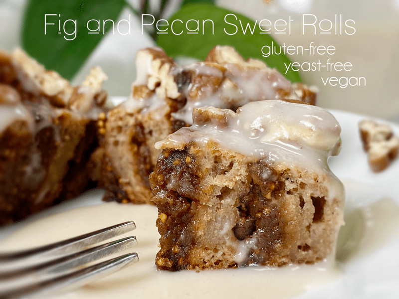
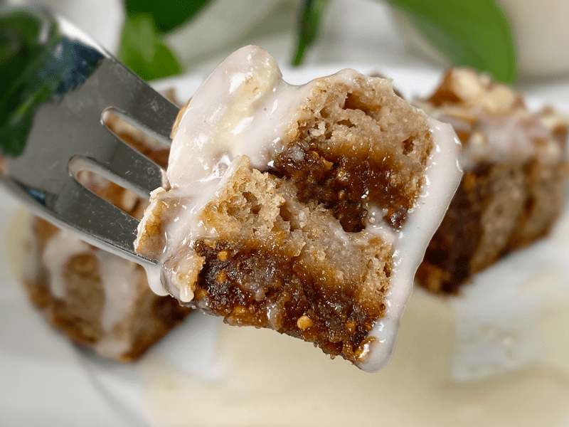
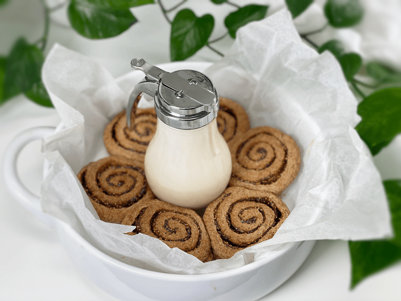
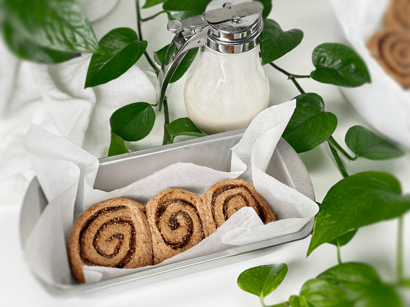

Fig and Pecan Sweet Rolls | Baked | Gluten-Free | Vegan | Yeast-Free
Just like the center of Fig Newton cookies, these sweet rolls are full of deliciously crunchy seeds. They are hearty while also being sweet (but not overwhelmingly so), making them perfect for breakfast, snacking, or any occasion where delicious and nutritious food is called for. Eating healthy doesn’t mean we have to sacrifice taste, comfort, and pleasure.

If you have been a member of Nouveauraw (slowly converting to AmieSue.com) you will have noticed that I have been in a baking frenzy. I have been creating bread, bagel, pretzel, muffin, and now sweet roll recipes! It was born out of necessity, actually. I love making food for others, but I REALLY love making foods for Bob. He is so appreciative and expresses this gratitude daily for all the yummy foods he gets to partake of. Over time, he has started to request more bread-like recipes. As soon as the words departed from his lips, I was in the studio, donning my chef’s hat! You can check out the other baked recipes (here) and (here).

If you wish to try your hand at raw loaves of bread, you can click (here). I have been designing and making them for over a decade now. Raw loaves of bread consist of bread that isn’t heated above 115 degrees (F)… which can be achieved through a few techniques that I teach. You don’t have to be 100% raw in order to enjoy them. Foods don’t have to be grouped together to fit under dietary labels. Do you remember the big craze of creating a fusion of ethnic cuisines? Well, we can adopt the same concept when it comes to building our daily menus. We can enjoy a beautiful balance of raw and cooked foods.

These sweet rolls are delicious all on their own, but who doesn’t love a little drizzle of icing?! Actually, Bob has never been a fan of icing on sweet rolls or donuts. So, with that being the case, I have grown accustomed to serving the icing alongside the rolls rather than covering them with the assumption that everyone loves icing as I do. Down below in the ingredient section, I provide a very quick and simple icing recipe, but if you want further inspiration, check out some other recipes that I gathered together for you.
Additional Topping Options

Tips and Techniques
- When rolling out the dough, lay a piece of plastic wrap on top so it doesn’t stick to the rolling pin.
- Baking: Regardless of what type of baking dish or pan you use, make sure to line it with some parchment paper. Also, be sure to give a little space between each roll, since they do expand.
- When spreading the fig paste on the dough, be generous but not TOO generous. There’s enough fig paste to create a solid layer on the dough. If you can see the dough through the paste, you are spreading it too thin.
- This recipe can be made (up to the baking point), frozen, thawed, and then baked! I tested this and they turned out perfectly. What a great way to be prepared for an upcoming event or just as a time-saver throughout the week.
If you plan on serving these for a special event, display the sweet rolls with the icing in a container with a pour spout. Let your guests or loved ones drizzle it on themselves. It creates a sense of involvement, giving them a moment of excitement as well as control over the amount of icing they prefer.
Rewarming the Rolls
- If feeding a large family or group of friends, you can bake them right before the celebration, serving them warm.
- If you baked them ahead of time, you can slide the whole pan back into the oven to warm them.
- If it is just you enjoying a single sweet roll, or if you are setting up a buffet, pull the toaster out and toast them as needed. You will need a toaster with wide slots, like a bagel toaster.
- **Of course you want to wait to ice them until after reheating them.
I hope you and your loved ones enjoy this recipe. Please be sure to leave a comment down below. blessings, amie sue
 Ingredients
Ingredients
Yields 10 sweet rolls
Fig Paste
- 2 cups dried figs
- 2 cups water
Psyllium Gel
- 2 cups (16 oz) water (fig soak water)
- 5 Tbsp (30 g) psyllium whole husks or 3 Tbsp (32 g) psyllium husk powder
Sweet Roll Mix
- 1 cup (100 g) gluten-free, rolled oats, ground
- 3/4 cup (100 g) almond flour
- 1/2 cup (100 g) raw hulled buckwheat, ground
- 5 Tbsp (40 g) arrowroot powder
- 1 tsp (4 g) baking powder
- 1/2 tsp (3 g) baking soda
- 1 tsp (6 g) sea salt
- 2 Tbsp (44 g) maple syrup
Filling
- 1 cup (277 g once made) fig paste (ingredients listed above)
- 1/2 cup (60g) whole pecans, chopped
Icing – yields 1 1/4 cup
- 1 cup plant-based milk
- 1/2 cup raw coconut butter
- 1/4 cup maple syrup
- 1/2 tsp vanilla extract
- pinch sea salt
Preparation
Fig Paste
- Before you start anything you will want to make the fig paste first because we are going to use the same water that we soak the figs in, in our psyllium gel. The measurements used to create the fig paste will produce more paste than what is needed for the recipe. Save the excess to spread on toast or add to perhaps a bowl of warm oatmeal. The food processor needs the measurement of figs in order to blend properly.
- Start soaking the dried figs in warm water for 15-30 minutes so they soften.
- Do not throw out the soaking water, because we will use that when making the psyllium gel.
- It also adds a subtle sweetness to the dough.
- After they are done soaking, drain the water so you can make the psyllium gel with the fig soaking water.
- Place the soaked figs in the food processor, fitted with the “S” blade. Process to a paste. If needed, add a little water to smooth out the fig paste. Measure out 1 cup (277 g) worth for the filling. Set aside.
Psyllium Gel
- Quickly whisk the soak water and psyllium husk powder in a mixing bowl. It will instantly start to gel, which is to be expected. Set aside while you prepare the remaining ingredients, so it can thicken.
- Preheat the oven to 350 degrees (F) and place the rack in the center of the oven.
- Line a baking dish with parchment paper and set aside.
Bread Mix–Dry Ingredients
- In the mixing bowl that we are going to knead the bread in, whisk together the oat flour, almond flour, buckwheat flour, arrowroot, baking soda, baking powder, and salt.
- I place the rolled oats and buckwheat kernels in the blender to break them down to flour.
- If you have a sifter, use that to thoroughly incorporate all the dry ingredients. Otherwise, use a whisk.
- If you don’t wish to use almond flour, you can use sorghum flour in its place. Same measurement.
Mixing the Dough
- Add the psyllium gel and drizzle the maple syrup around the bowl.
- Using either a hand mixer or a free-standing mixer with dough attachments, knead for 5 minutes (set a timer on your phone) to ensure that it gets kneaded enough (don’t we all love feeling needed?).
- Start the mixer on low until the flour is folded in, then turn it up one speed; don’t go any higher. If you start off at too high a speed, the flour will jump out of the bowl.
Rolling the Dough
- Place the dough on a piece of parchment paper, cover with plastic wrap, and roll it out into a rectangle. Mine measured 15″ x 11″ x 1/4 ” thick.
- Spread the fig paste, making sure to cover the entire surface. Sprinkle the chopped pecans on the fig paste.
- Starting from one end, roll the dough into a log. Cut into roughly 1″ slices. I was able to make 10 sweet rolls.
- Place the sweet rolls in the lined baking dish. I left a little space between them, since they expand a bit while baking.
- Bake on the center rack for 25 minutes. Check and see if they need longer, each oven is different.
- When done baking, slide it onto a cooling rack.
- Once the sweet rolls have thoroughly cooled, you can store any leftovers in an airtight container. They should last up to roughly 5 days on the counter or in the fridge. You can freeze them by individually wrapping them so you can take them out as needed.
Icing
- Place the plant-based milk, softened coconut butter, maple syrup, vanilla, and salt in the blender, blending until smooth. Pour into a container with a pouring spout, or use a squeeze bottle.
- If you make this icing ahead of time and it firms up, warm in a water bath until spreadable.
- Drizzle over all of the sweet rolls or one at a time upon serving.
- Icing should keep for a week, possibly longer.
© AmieSue.com